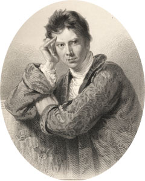

|
|
|||||||
|
|
Home | Corson Collection | Biography | Works | Image Collection | Recent Publications | Correspondence | Forthcoming Events | Links | E-texts | Contact Sir David Wilkie (1785-1841)The son of a minister, David Wilkie was born in Cults, Fife, on 18 November 1785. He attended the Trustees' Academy of Design in Edinburgh from 1799 to 1804 and, upon completing his studies, moved to London in 1805 and gained admission at the Royal Academy where his contemporaries included Andrew Geddes. Here he encountered almost immediate success when the first of his realistic portrayals of rural life, The Village Politicians, was unveiled at the Academy's 1806 exhibition. A string of equally acclaimed paintings in the same vein followed, including The Blind Fiddler (1807), The Card Players, The Rent Day (both 1808), The Village Festival (1812), Blind Man's Buff (1813), Distraining for Rent (1815), The Scotch, or Penny Wedding (1818). The homely simplicity of Wilkie's compositions stood in marked contrast to the artificial and contrived nature of much contemporary genre painting and signalled a turning-point in British Art. Together with Sir Henry Raeburn, he was hailed as the founder of a new 'Scottish School' of painting. Wilkie collaborated on popular print-versions of his paintings with Abraham Raimbach which brought both men considerable financial success. Public acclaim was accompanied by professional recognition. Wilkie was elected an Associate of the Royal Academy in 1809, when he was only 24 years old, and a full member in 1812. Following the death of Raeburn in 1823, he was appointed His Majesty's Limner for Scotland.
Wilkie portrayed Scott in three paintings and one drawing. The former include two group compositions The Abbotsford Family (1817) and The Entrance of King George IV at Holyrood (1829), and an individual portrait (1824). The latter is a sketch of Sir Walter Scott Coursing. These are discussed on separate pages which also provide details of Wilkie's relations with Scott. In addition to the portraits, Wilkie painted a number of works illustrative of or inspired by Scott's novels. In 1829, he agreed to provide sketches to be engraved for the Magnum Opus edition of the Waverley Novels. In a letter of thanks, Scott wrote that 'you, who are beset by the sin of modesty, will be least of all men aware what a tower of strength your name must be in a work of this nature, which, if successful, will go a great way to counterbalance some very severe losses which I sustained, two or three years since, by the failure of Constable's house, and Hurst and Robinson's, in London' (Letters, XI, 73). He was anxious, however, lest Wilkie jeopardize his health through working to a deadline. Wilkie, in fact, may be supposed to have been peculiarly sympathetic to Scott's plight (see Financial Hardship) as he too had suffered by the collapse of Hurst & Robinson. He assured Scott that he would be delighted to 'assist in the illustration of the great work which we all hope may lighten or remove that load of troubles by which your noble spirit is at this time beset'. He was merely repaying 'a debt of obligation which you yourself have laid upon me when, with an unseen hand in the Antiquary, you took me up, and claimed me, the humble painter of domestic sorrow, as your countryman' (Letter of 10 January 1829, The Private Letter-Books of Sir Walter Scott, p. 250). Here Wilkie is referring to a passage in chapter 10 of The Antiquary (1816), where Steenie Mucklebackit's mourning family present 'a scene which our Wilkie alone could have painted, with that exquisite feeling of nature that characterises his enchanting productions'. Wilkie added that he was already planning an illustration of Henry Morton's arrest in Old Mortality, which would permit him to depict Morton's man-servant Cuddie Headrigg and his mother 'of all your creations my favourite'. This illustration appeared in the Magnum Opus as Scene at Milnwood (click on thumbnail, above) along with a title page vignette for Old Mortality and illustrations of Henry Wardon before the Sub-Prior for The Monastery and Julian Peveril and Sir Geoffrey Hudson in Newgate for Peveril of the Peak. These were republished in the Abbotsford Edition of the Waverley Novels (1842), together with two further illustrations for Old Mortality (Tent Preaching at Kilmartin and Cuddie Headrigg's Cottage: possibly unused sketches for the Magnum Opus) and one for The Abbot (Roland Graeme and Catherine Seton before Queen Mary). The Abbotsford Edition also contained engravings of Wilkie's The Abbotsford Family and Sir Walter Scott Coursing and of four previously exhibited paintings by Wilkie depicting people, places, or scenes featured in Scott's novels: Gustavus Adolphus for A Legend of Montrose, Dürrenstein on the Danube for Ivanhoe, The Escape from Lochleven Castle for The Abbot, and The Convent of the Holy Brethren and Distant View of the Holy Sepulchre at Jerusalem for The Talisman. Although these last were not originally designed to illustrate a specific edition of Scott, they are likely to have been inspired by a reading or recollection of Scott. It has similarly been suggested that Wilkie's The Reading of a Will (1820) and Napoleon and the Pope in Conference at Fontainebleau (1836) were inspired by passages in Guy Mannering and Scott's The Life of Napoleon Buonaparte respectively.
Bibliography
Last updated: 26-Apr-2005 |
||||||